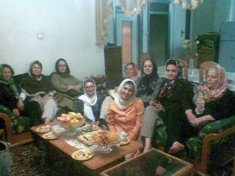

|
|
|
Browsing
Contact Us |
Campaigners |
Face to Face |
Tribune |
Interview |
News |
On the Web |
One Million |
Report
Farsi | Français | German | Italian | Spanish | العربية Also in this section
|

Mahboubeh Karami Sentenced to Four Years Mandatory Prison Mahboubeh Karami after 6 Months in Detention: I Have Denied all the Charges Brought against MeMonday 30 August 2010 Change for Equality: Mahboubeh Karami a women’s rights and Campaign activist who was arrested on March 2, 2010 after security forces raided her home, is now free on a bail order of half million dollars, after spending 6 months in detention. Karami was sentenced to serve 4 years in prison by the 26th Branch of the Revolutionary Courts. In an interview with the site of Change for Equality, Mahboubeh spoke about her time in Ward 2 of Evin prison, managed by the Revolutionary Guards. What happened on March 2, 2010? On that night I was at my home along with my father and brother. Around 11 pm someone rang the door bell. When my brother answered, the person behind the door explained that he was a technician from the electric company and asked him to open the door. My brother went to the front yard and I could see from the window that three men approached him and showed him a piece of paper. They entered our home along with my brother. As soon as they entered our home one of them began to search the premises. Another asked to see my computer. What was on the piece of paper they showed your brother? It was a summons giving them the right to search the premises, to seize my personal property, such as books and papers and my computer and to arrest me. But these security officials did not only search my personal property, they searched the entire house, including my brothers belongings. After your arrest, where were you taken? They asked that I go with them and in response to my brother’s repeated inquiries about why I was being arrested they kept saying that it’s not an important issue and they only want to question me. But these three men who had come to my house in the middle of the night intended to arrest me. The fact that they were three men and there was no woman with them was worrisome for both myself and my family. They took me to the car and gave me a blindfold and pushed my head down to the ground and in the end they took me to Evin prison, to Ward 2. Of course, at first I didn’t realize that this was Ward 2, which is managed by the Revolutionary Guards. Anyhow, I was taken to solitary confinement. The following day, my interrogations began.
Prior to the start of the interrogations, did they explain to you why you had been arrested? Unfortunately no one explained anything to me. The first time they took me to the interrogation room, I noticed that the walls were mirrored. Later I found out that they referred to that room as the mirrored interrogation room. The female prison guard who had taken me to that room, left me there and I sat on the chair in the room. After a few minutes a man entered the room abruptly while yelling and screaming at me. He was very violent and from the minute he entered the room, he yelled “GET UP! Who has allowed you to sit?” I got up, but he continued his constant shouting “stand up straight! Don’t lean on the wall!” He was cursing. I became very anxious and nervous. He kept yelling, “tell me the password to your email!” and he continued cursing at me. Finally I realized that the reason for my arrest was my association with the “Human Rights Activists Group,” because all his questions were in this relation. You said that the room they took you to was the mirrored interrogation room. Why did they call it the mirrored room? The walls were covered in mirrors. Later I found out that when they left me alone in the room and even when I was being interrogated, there were people behind the mirrors watching. What happened next? After the first interrogation, another interrogator was sent. He tried to have a more pleasant approach. I was interrogated on an almost daily basis, and remained in solitary confinement. This continued for several weeks. I was under a great deal of pressure emotionally. One day, I asked the prison guard to bring me my scarf. I explained that the blanket they had given me had a lot of hairs on it and that I wanted to use my scarf as a sheet between my body and the blanket. She brought me the scarf. I tied the scarf around my neck tightly. I was tired and extremely weak. I was crying constantly and my emotional state was extremely poor. I pulled on the knot of the scarf, tightly, that eventually, I passed out. When I came to, there were two guards standing over me, and they were rubbing my neck. After that they took me to the interrogation room again. The first interrogator came to the room and began explaining that all that was happening to me was actually my own fault and a result of my own wrongdoing. Despite having attempted suicide in prison they didn’t take you to a doctor? They took me to the prison infirmary and there they didn’t do anything in particular for me. More than anything, I needed a psychologist or psychiatrist or a therapist, not a general doctor. Were you provided phone privileges during your imprisonment? Yes. Almost every other day I was allowed to call my brother or my aunt, who has been very worried about me since the passing of my mother. How long were you in Ward 2 of Evin managed by the Revolutionary Guards? Approximately 80 days. Of course during this time, I was transferred also to solitary confinement in the women’s ward. I would be taken from there to Ward 2 for my interrogations.
 Last March (2009), you were also in prison during the Iranian New Year’s holidays, is that true? Yes . Last March 2009, I was in prison and arrested for no reason. My mother was extremely sick with cancer and I missed out on being with her during her final days. This year for the New Years, despite all their promises, they did not allow me to attend the memorial services for my mother. They didn’t even give me the clothes my family had delivered to the prison in the hopes that I would be allowed to take part in her memorial service on the anniversary of her passing. Where did they send you after Ward 2? After 80 days I was transferred to the quarantine section of the female ward. I spent another 18 days in solitary confinement there and did not have the right to make any phone calls. My lack of communication worried my family greatly. After that they transferred me to the public women’s ward. I spent all my days in the public ward in one room along with 25 other prisoners. We were in a room that is called the political prisoner’s room. Did you feel better after going to the public Ward? Naturally, I felt much better than when I was in solitary confinement. But I had become very weak and extremely depressed. I was crying constantly. Did you receive any medical care during this time? After I submitted a written request I was taken to the medical examiner, who determined that I was suffering from depression. Of course he has also determined that my emotional state and my depression would not prevent me from serving any prison sentence that may be handed down in my case. Except for this, no other action was taken to provide me with treatment in prison. During your imprisonment, there were news reports that you had to go for a nose operation in Taleqani hospital, but you did not agree to the operation. Can you explain about this? I have had problems with my breathing since I was a child. For this reason I am a difficult sleeper. In prison I made a lot of noise while sleeping as well. Sometimes I would snore, but at times I would scream while sleeping. My screaming was so bad that my cell mates had to wake me up. They took me to the hospital for this reason and the doctor suggested that I have an operation which would allow me to breathe more easily. I did not agree to the operation, because prison conditions are not suited for a recuperation after operation. Also, my problems were much more serious than just breathing difficulties. During this time, your court date has been changed on two occasions. Can you explain about that? My first court date was scheduled for the 29th of June, but was postponed because on that day most court officials were on holiday and there was no one present to respond to our inquiries either. The second time, the Judge was not present in his chambers and as such the date of my hearing was postponed again. What were the charges brought against you in court? I was charged with holding a position of responsibility in an illegal organization (the human rights activists group), accepting responsibility of the women’s committee in this group with the intent of disrupting national security, spreading of propaganda against the state, collusion and gathering with the intent to commit a crime against national security and the publication of lies. Did the court find you guilty of all the charges against you? I was only acquitted on the charge of spreading lies, but was found guilty on all other charges. I was sentenced to two years for membership in the human rights organization and two years for collusion and gathering and spreading of propaganda against the state. In total I received a four year mandatory prison sentence. So, you have been sentenced to four years. What will you do next? I will appeal the ruling. Currently because of my poor emotional state and on doctor’s orders I will have to be hospitalized. But my lawyers will appeal the ruling in the time frame allotted by the courts. I do not accept any of the charges brought against me and have denied them. Note: Pictures are from visits of Campaign activists with Mahboubeh Karami after her release. The first picture is of Mahboubeh with her ailing father, who suffers from advanced Alzheimer’s disease. Mahboubeh was his sole care giver prior to her arrest. |